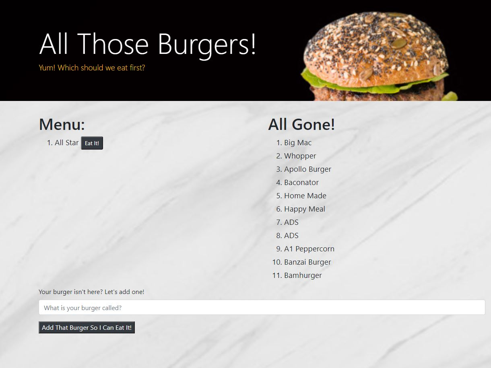

Innovative Construction Services
ICS Repository
Innovative Construction Services is a start up company in need of a sleek website to help them get their name in the game. Using their assets and existing domain, as well as getting them set up with the Google Search Console, I was able to get them started with a successful web presence.
Jab Effects - Covid-19 Vaccine Survey
Jabs Repository

For project 2, we created a survey form and MySql database to track Covid-19 vaccine side-effects entered by our users. The statistics page allows the user to select and see graphed demographics, and the password protected admin site allows access to the database from the front end, /login and /admin to access. This application won the class award "Best Use of Technology".
Scott Schofield Construction
SSC Repository
Scott Schofield Construction was looking to update their website with a new modern feel that included information about their services and had a video. The current layout and design is approved, and once the final assets and wording are provided, I will help them get the page deployed on their existing domain. This site is responsive, and the layout changes for mobile viewers.
Inventory Organization Utility
Inventory Organization Repository
This inventory location and notification utility was a group project created for a local company having issues with inventory organization. Using Google Maps, with a map overlay and smtpjs.com we created a simple and responsive tool to help them improve productivity, efficiency, and communication. This application won the class award "Best Business Solution".
Burger Eater
Practice Application
Burger Eater Repository
This fun little application allows a user to view a burger menu and select a burger to eat. Clicking on "Eat It" will move the burger to the eaten column. This app also allows a user to add a new burger to the uneaten column. Using Heroku, Handlebars, Express, ORM and MySql, this was an exercise in MVC.
Weather Dashboard
A Step Above
Weather Repository
This fun weather dashboard using OpenWeatherMap.org allows you to search for a desired city in the United States to receive current weather, humidity, wind speed, and uv index info as well as the 5 day forecast. To add my flare, the page background changes based on the current weather condition listed, and I found more appealing weather icons.